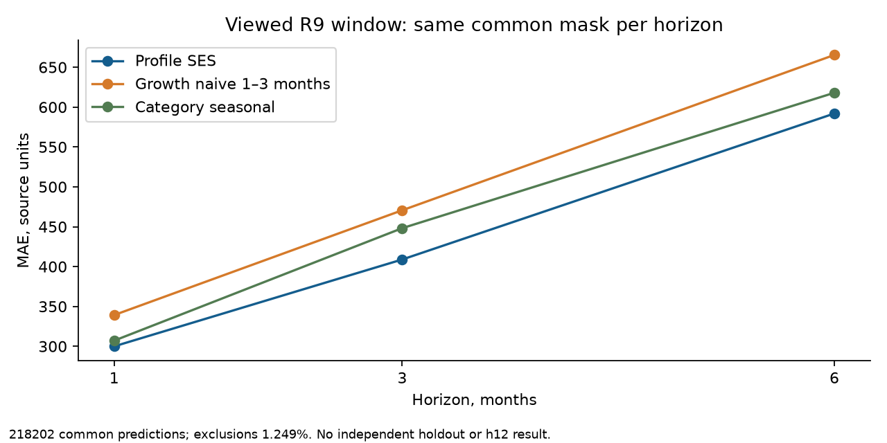
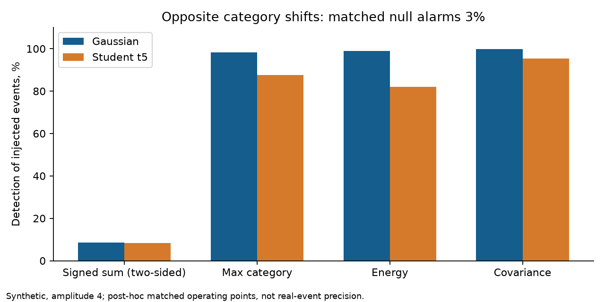

Наблюдение и доступность
Формула читает только месяцы до origin. Исторические даты доступности и vintages неизвестны; этот аудит не является независимым будущим тестом.
РЕТРОСПЕКТИВНЫЙ АУДИТ02 / ИССЛЕДОВАНИЕ СИГНАЛОВ
Замечать изменение структуры расходов вовремя — и отличать ранний сигнал от уже случившегося события.
СПРОСИТЕ ИССЛЕДОВАТЕЛЯ
Агент ищет материалы проекта «Радар» в базе знаний и объясняет выводы со ссылками на источники.
Наблюдения, гипотезы и синтетические проверки рассматриваются отдельно.
| h, мес. | Пары | Сезонность | Prophet | Последнее | 50/50 |
|---|---|---|---|---|---|
| 1 | 73,728 | 309.6 | 641.7 | 625.7 | 381.4 |
| 3 | 73,656 | 449.5 | 719.9 | 865.2 | 470.5 |
| 6 | 73,578 | 618.1 | 740.4 | 1125.3 | 543.1 |
MAE в исходных единицах. Prophet сохранён с отключённой годовой сезонностью. Фиксированный ансамбль не подбирался по результатам.
Последнее значение муниципального ряда умножается на прошлогоднее отношение медиан категории между теми же месяцами. Оба месяца отношения находятся до старта прогноза. Параметры не обучаются.
Для 12 месяцев нет базы 2022 года: результат NA.
Без декабря MAE сезонной модели: 296,0 / 452,7 / 596,9. Улучшение относительно last: 30,4% / 26,1% / 40,0%.
В категории «Здоровье» есть ухудшения. Для h6 без декабря интервал выигрыша у Prophet включает ноль.
Шесть официальных событий из пяти источников: паводок в трёх МО и три повышения ставки ЦБ. Даты публикаций сохранены отдельно от сегодняшнего first_seen.
В апреле маркетплейсы Орска −13,2%, в мае +23,8%. Совпадение с паводком не доказывает его причинный эффект.
Прежний банк не выбрал тревог апреля–мая по Орску, Оренбургу и Новотроицку при месячных лимитах 24 и 96. Полной истинной разметки нет; эти лимиты не означают число ложных тревог.
В raw 2190 МО и 8 отсутствующих регионов; на R9 2076 МО и 12 отсутствующих регионов. Всеобщая репрезентативность не заявлена.
Полный отчёт: формула, интервалы, категории, команды и SHA
Русская методология · Следующие исследования
Исторические available_at/vintage неизвестны. Новостной прирост и независимый scientific PASS пока не получены.
На общей маске218202 прогнозов Profile SES: MAE299,96 /408,88 /591,97 при h1/3/6. Ростовой наивный за1–3 месяца:339,20 /470,62 /665,41. Исключено1,249% старой маски; показатели выше рассчитаны заново на одинаковых строках.
На прежнем пилоте120 рядов с общими данными категории снижение ошибки к условному годовому Prophet:26,08% /27,17% /17,51%. В раннем окне Profile хуже более простых моделей; универсальное преимущество и независимый holdout не заявлены.
Оба окна, формулы, интервалы и воспроизведение

На синтетическом t5 шуме ковариационная оценка нашла95,38% противоположных сдвигов против87,68% у max категории при одинаковых3% null тревог. Это ретроспективное сравнение рабочей точки, не точность реальных событий.
При лимите24 МО/месяц Орск в апреле выбран covariance, energy и max. Простой max тоже видит событие; превосходство нового метода на реальных событиях не доказано.
Независимая калибровка, все формы шока и пределы

ПРОСТРАНСТВО НАБЛЮДЕНИЯ
Цвет показывает федеральный округ по экспорту OpenStreetMap 2021 года, а не потребление или вероятность шока.
Формула читает только месяцы до origin. Исторические даты доступности и vintages неизвестны; этот аудит не является независимым будущим тестом.
РЕТРОСПЕКТИВНЫЙ АУДИТMAE 309,6 / 449,5 / 618,1 на h1/h3/h6. Сохранённый Prophet отключает годовую сезонность. Один прошлый год ограничивает перенос результата.
220 962 ОБЩИЕ ПАРЫПаводок подтверждён официальными источниками. Прежний банк не выбрал апрельских/майских тревог по трём рассмотренным МО. Причинный эффект не утверждается.
ОТРИЦАТЕЛЬНЫЙ РЕЗУЛЬТАТ СОХРАНЁН